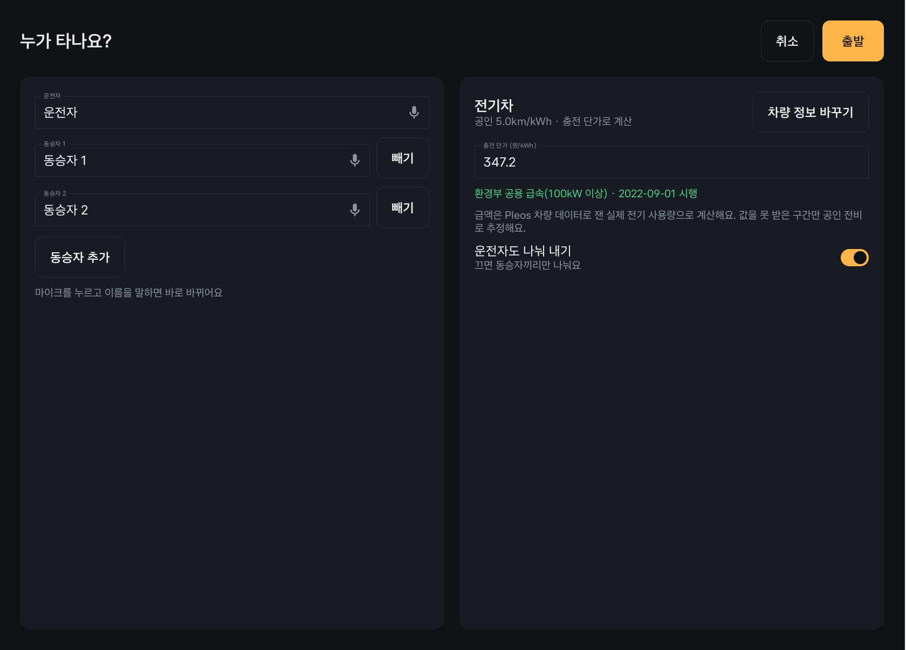
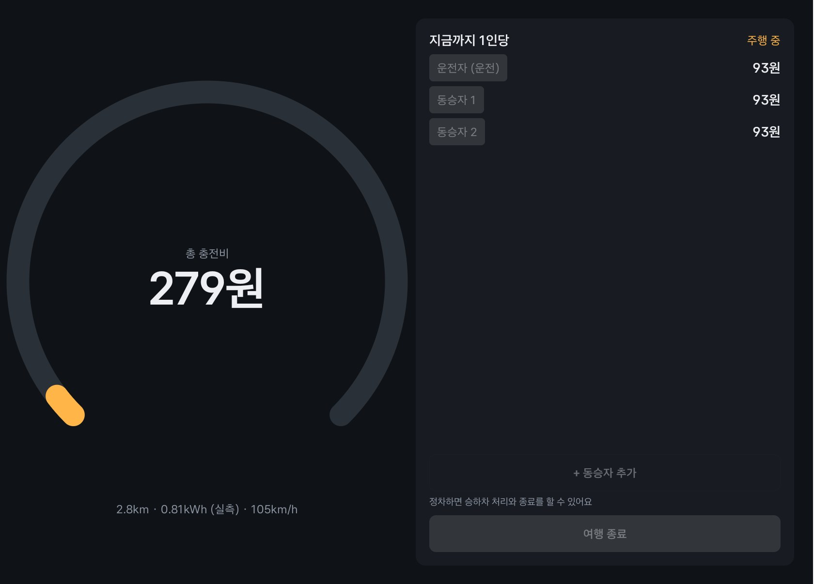
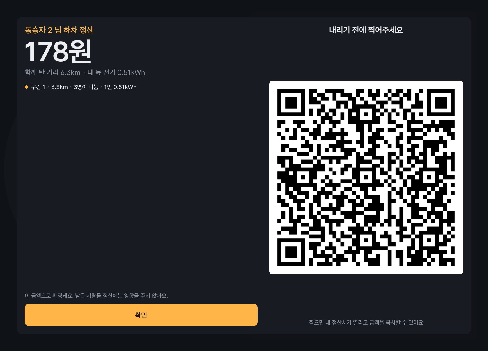
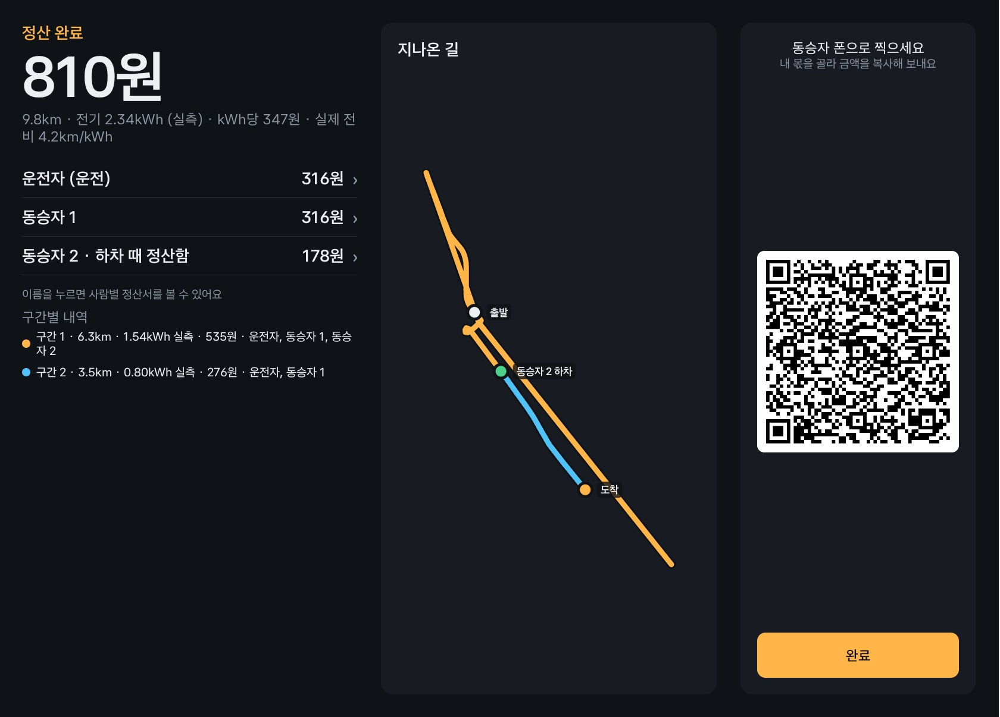
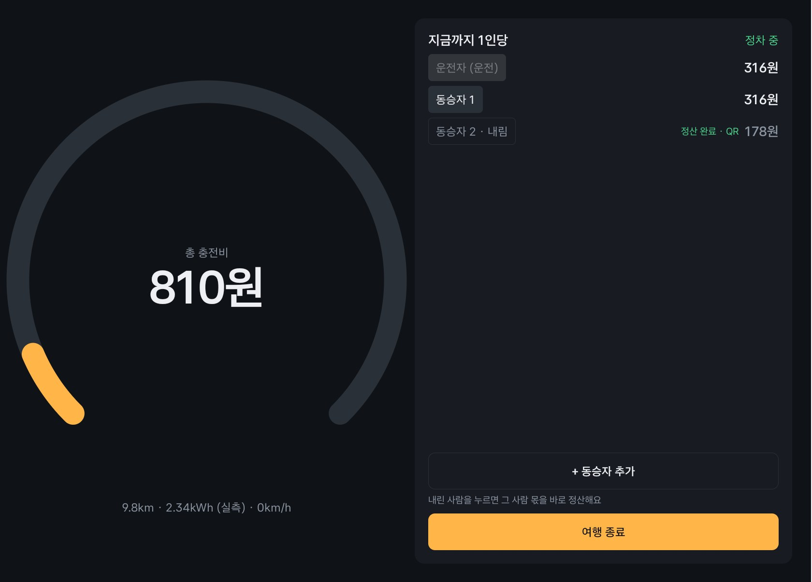
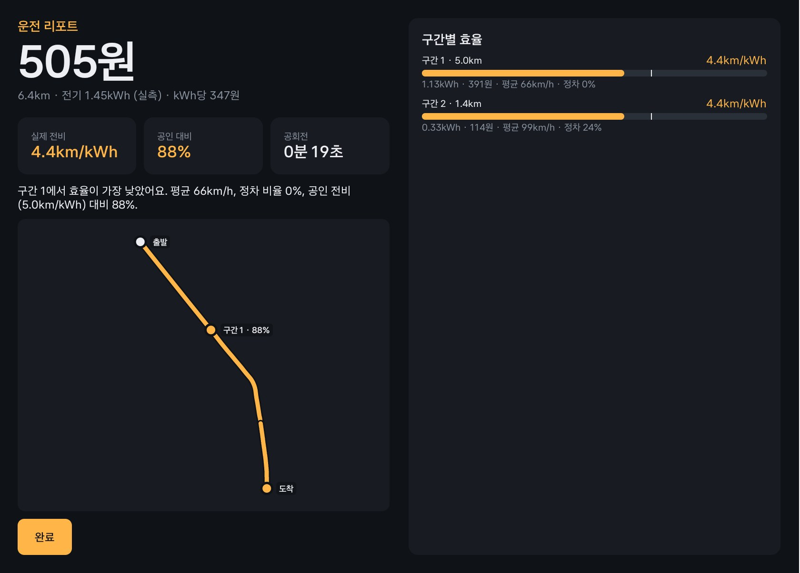

사실 직접 측정했거나 출처가 있는 수치 구현 코드와 시연으로 확인되는 기능 가정 검증 전 예상치 · 화면은 모두 에뮬레이터에서 실제 Pleos SDK 값으로 찍었다 · Pleos Connect (AAOS, API 34) · Vehicle 2.3.2 · NaviHelper 3.0.5 · SpeechToText 3.3.1
AUTONOMICS · 2026 현대자동차그룹 차량용 앱 개발 공모전 기획서01 / 12
02Problem Definition누가, 어떤 순간에 불편한가심사 항목창의성 · 사업성
기름값·충전비를 "얼마씩" 받아야 하는지, 차에 탄 누구도 모른다.
문제가 생기는 순간
출발 전"나중에 정산하자"얼마 받을지 모른다
중간 하차"내 몫이 얼마지?"그 자리에서 못 정한다
도착 후"영수증이 안 맞네"주유·충전 시점과 이동이 다르다
며칠 뒤"그냥 됐어…"운전자가 계산·청구하거나 포기
같은 차, 세 사람의 불편
운전자
"얼마 달라고 하지?"
근거가 없어 말을 못 꺼낸다. 결국 덜 받거나 안 받는다.
끝까지 탄 동승자
"얼마를 줘야 하지?"
적게 주면 실례일까 눈치를 본다.
먼저 내린 동승자
"절반만 탔는데…"
똑같이 내자니 아깝고, 따지자니 미안하다.
지금의 방법과 한계
어림 N빵실제 소모와 무관하다
주유 영수증 나누기이동과 시점이 다르다
공인 연비 × 거리실제 효율과 다르다
더치페이·송금 앱총액은 사람이 입력한다
A. 여행·귀성 장거리
금액이 커서 대충 나누기 껄끄럽다
B. 정기 카풀
소액이 반복돼 계산이 귀찮다
C. 경유·중간 하차
누가 어디까지 탔는지 계산할 방법이 없다
근본 원인
이번 이동에 실제로 든 연료·전기 값, 곧 "나눌 총액"을 아는 사람이 없다. 그 값을 처음부터 끝까지 아는 것은 차뿐이다.
AUTONOMICS · 2026 현대자동차그룹 차량용 앱 개발 공모전 기획서02 / 12
03Problem Validation이 불편은 실제로 있고, 중요한가심사 항목창의성 · 사업성
흔한 일이고, 지금의 계산법으로는 정확히 풀 수 없다.
얼마나 흔한가 사실
84.5%
국내여행 중 자가용 이동 연 3억 90만 회 (2025)
문체부 「2025년 국민여행조사」
3.7명
여행 한 번의 평균 일행 친구·연인 동반 35.7%
같은 조사 · 본인 포함, 전 이동수단
왜 추정으로는 안 맞는가 사실
13~24%
같은 전기차, 겨울엔 주행거리 감소 18℃ → −1℃, 3개 차종
한국소비자원 시험 (2025.1)
1.5배
같은 차의 도심·고속 연비 9.9 ↔ 14.9km/ℓ
더 뉴 그랜저 2.5 신고 연비
295~393원
공공 충전 1kWh 요금 출력별 5단계 (2026.8~)
기후에너지환경부
같은 220km인데, 어느 연비를 고르느냐에 따라
도심 연비 9.9km/ℓ
22.2ℓ · 41,200원복합 연비 11.6km/ℓ
19.0ℓ · 35,200원고속 연비 14.9km/ℓ
14.8ℓ · 27,400원
최대 13,800원 차이. 이번 이동이 실제로 얼마였는지는 차만 안다.
위 신고 연비로 한 단순 계산 · 휘발유 1,855원/ℓ (2026-11-10 오피넷 전국 평균)
없는 근거는 직접 묻는다
유류비 분담의 불편을 직접 물은 공개 설문은 찾지 못했다. 그래서 지인 인터뷰로 확인한다.
대상 최근 3개월 안에 지인과 차로 이동한 운전자·동승자
질문 어떻게 나눴나 · 공정했나 · 중간 하차 때는 · 차가 계산해 주면 쓰겠나
결과응답 수와 결과 기입
정산 수요는 이미 일상 — 카카오뱅크 모임통장 이용자 1,330만 명 (2026년 3분기 실적, 언론 보도)전기차 누적 109.5만 대 · 2026년 상반기 신규등록의 23% (국토교통부)
AUTONOMICS · 2026 현대자동차그룹 차량용 앱 개발 공모전 기획서03 / 12
04Why In-Car?왜 스마트폰이 아니라 자동차인가심사 항목차량특화성
휴대폰은 이 차가 연료·전기를 얼마나 썼는지 모른다. 이 정산은 차에서만 성립한다.
213
1차가 잰다
배터리가 실제로 줄어든 0.81kWh → 279원. 휴대폰은 알 수 없는 값이다.
Vehicle SDK · 배터리 에너지 · 주행거리계
2차가 안다
105km/h 주행 중임을 알고 버튼을 잠근다. 서면 열린다.
차속 · 기어
3차가 이어 간다
앱을 열어 두지 않아도, 시동을 껐다 켜도 기록은 계속된다.
부팅 신호 · 주행거리계 보정
지금 — 휴대폰과 사람의 계산
차 안에서 — AUTONOMICS
언제
도착 후나 며칠 뒤, 따로 계산한다
→
내리는 순간, 그 자리에서 확정된다
조작
총액 찾기 → 입력 → 계산 → 청구
→
이름을 말하고, 내릴 때 한 번 누른다
데이터
영수증, 공인 연비 × 지도 거리 (추정)
→
배터리·연료 잔량의 실제 변화 (실측)
차량 데이터가 없으면?
금액의 근거가 사라진다. 못 받은 구간만 추정하고 화면에 표시한다.
주행·정차에 따라 달라지나?
같은 화면이 바뀐다. 주행 중엔 보기만, 정차 중엔 조작. → 07
주의 분산은?
운전 중 입력 0회. 이름은 음성으로, QR은 동승자가 찍는다.
AUTONOMICS · 2026 현대자동차그룹 차량용 앱 개발 공모전 기획서04 / 12
05Solution & Value무엇을 어떻게 바꾸는가심사 항목창의성
정산의 단위를 "총액"에서 "탑승 구간"으로. 차가 재고, 탄 만큼 나누고, 내릴 때 끝낸다.
한 사람의 몫 = Σ ( 탄 구간의 실제 비용 ÷ 그 구간에 타고 있던 인원 )
사실 에뮬레이터 시연 실측 (9.8km · 2.34kWh). 단가 347.2원/kWh는 시연 당시 앱 기본값(개편 전 공공 급속 요금). 사람별 금액은 1원 단위로 정하고 총액은 그 합이다.
같은 이동, 두 가지 계산
어림 N빵
운전자
270원동승자 1
270원동승자 2
270원
구간 정산
운전자
316원동승자 1
316원동승자 2
178원
먼저 내린 사람은 34% 적게 낸다.
거리가 길어지면 가정
왕복 440km·4명, 한 명은 가는 길만: N빵 17,000원 → 구간 정산 8,500원
휘발유 12km/ℓ · 1,855원/ℓ 가정
추정 → 실측
① 차가 잰다
근거
Vehicle SDK로 배터리·연료 잔량의 변화를 구간마다 기록 구현
가치
"얼마 받아야 하지?"가 사라진다
총액 → 구간
② 탄 만큼 나눈다
근거
타고 내릴 때마다 구간을 끊어 그때 탄 사람끼리만 분담 구현
가치
먼저 내린 사람도 납득한다
며칠 뒤 → 그 자리
③ 내릴 때 끝낸다
근거
정차 중 이름을 누르면 금액 확정 + QR. 설치 없이 폰으로 확인 구현
가치
나중의 계산과 청구가 없어진다
AUTONOMICS · 2026 현대자동차그룹 차량용 앱 개발 공모전 기획서05 / 12
06User Journey차 안에서 실제로 어떻게 흘러가는가심사 항목차량특화성 · 창의성
운전자는 이름을 말하고, 내릴 때 한 번 누른다. 나머지는 차가 한다.
친구 둘을 태우고 출발해, 한 명을 가는 길에 내려 주고 목적지까지 가는 경우
1
출발 전
정차 중

기존
"나중에 정산하자"
사용자
마이크로 동승자 이름을 말한다
차·앱
차종을 판별하고 오늘 단가를 채운다
결과
타이핑 없이 출발
2
주행 중
주행 중

기존
영수증과 이동이 안 맞는다
사용자
그냥 운전한다 (조작 0회)
차·앱
1초마다 실제 소모량을 금액으로 올린다
결과
신경 안 써도 쌓인다
3
중간 하차
정차 중

기존
먼저 내린 사람 몫을 못 정한다
사용자
내리는 사람 이름을 누른다
차·앱
탄 구간만큼 금액을 확정하고 QR을 띄운다
결과
그 자리에서 끝
4
도착
정차 중

기존
며칠 뒤 청구하거나 포기
사용자
여행 종료. 동승자는 QR을 찍어 금액 복사
차·앱
사람별 금액, 구간, 지나온 길을 보여 준다
결과
계산과 청구가 사라진다
동승자 쪽에서 보면 — 앱 설치 없이 폰만으로
차 화면의 QR을 찍는다폰 기본 카메라
정산서가 열린다브라우저에서 바로
내 이름을 누른다내가 탄 구간과 금액 확인
금액 복사쓰던 송금 앱에 붙여 넣는다
쓰인 SDK — SpeechToText (이름) · Vehicle (소모량·주행거리·기어) · NaviHelper (지명)중간 탑승도 같다 — 정차 중 "+ 동승자 추가", 그때부터만 낸다시연 영상은 이 네 단계를 그대로 따른다
AUTONOMICS · 2026 현대자동차그룹 차량용 앱 개발 공모전 기획서06 / 12
07Core Features & UX핵심 기능과 주행·정차별 경험심사 항목차량특화성
달리는 동안은 큰 숫자 하나, 서 있을 때만 조작이 열린다.
주행 중보기만 한다 — 버튼 잠김
정차 중조작이 열린다

기능
주행 중
정차 중
이유
실시간 금액 보기 · 자동 기록
조작이 필요 없다
하차 정산 · QR
—
내리는 순간은 정차 중이다
동승자 추가 (음성)
—
입력이 필요하다
여행 종료 · 결과
—
정보량이 많다
핵심 기능 세 가지
① 실측 구간 기록
1초마다 차량 값을 기록한다. 시동을 껐다 켜도 여행이 이어진다.
② 하차·탑승 즉시 정산
정차 중 이름 한 번으로 금액 확정. 중간에 탄 사람은 그때부터만 낸다.
③ 설치 없는 QR 정산서
폰 카메라 → 브라우저 → 금액 복사. 서버에 저장하지 않는다.
솔로 모드 보조 기능
혼자 탈 때는 같은 실측으로 구간별 전비·연비 리포트를 보여 준다.

주의 분산을 줄이는 원칙운전 중 입력 0회큰 숫자 하나손 대신 음성알아서 기록Distraction Optimization 선언 — 주행 화면에 입력·QR·긴 글 없음
AUTONOMICS · 2026 현대자동차그룹 차량용 앱 개발 공모전 기획서07 / 12
08Technical Architecture차량 데이터가 금액이 되기까지심사 항목기술 활용성
차량 신호 → 1초 샘플 → 구간 → 금액 → 차 화면과 QR.
실선은 구현되어 동작하는 흐름, 점선은 개발 예정이거나 뒤에서 받치는 부분. 모든 차량 값은 실제 Pleos SDK에서 온다.
값을 믿을 수 있게 하는 규칙
실측 우선 — 잔량 변화가 없을 때만 공인 효율로 추정하고 "추정"으로 표시
연료 게이지 — 오차가 큰 20km 미만 구간에는 쓰지 않는다
거리 — 주행거리계. 멈춰 있으면 차속을 적분
오프라인 — 계산은 모두 차 안에서
가짜 데이터 금지 — 자동 검사로 강제
시동을 껐다 켜도 이어지는 기록
5초마다 진행 상태 저장 → 시동 ON이면 부팅 신호로 여행 복원 → 꺼져 있던 동안의 거리는 주행거리계로 더한다.
데이터가 머무는 곳
기록은 차량 기기 안에만. 이름·금액은 QR 주소의 # 뒤에만 담겨 서버로 가지 않는다.
AUTONOMICS · 2026 현대자동차그룹 차량용 앱 개발 공모전 기획서08 / 12
09Feasibility & Proof실제로 동작하는가심사 항목기술 활용성 · 가산점
아이디어가 아니라 이미 도는 앱이다. 15개 기능 중 10개를 구현하고 확인했다.
10구현 완료 코드와 테스트 결과가 있다
전기 소모량 실측Vehicle · EvBattery
주행거리Vehicle · Odometer
정차 판단 · 조작 잠금Vehicle · Gear + AAOS 차속
구간 정산 · 하차 확정 · 중간 탑승순수 Kotlin 도메인 · 테스트 35개
시동 OFF/ON 이어하기부팅 리시버 + 주행거리계 보정
이름 음성 입력SpeechToText · 온디바이스
오늘 유가서버리스 함수 → 오피넷
QR 정산서정적 웹 · 주소 해시
솔로 자동 구간 · 리포트정차 · 도로 유형 · 지역
차종 판별Vehicle · 배터리/연료 유무
3프로토타입
연료 소모량 실측Vehicle · Fuel × 탱크 용량. 단위 테스트로 검증
지명 · 지역 구간 분할NaviHelper 위치 정보. 주소 수신 확인
충전 단가2026.8 개편 요금으로 갱신 필요
2개발 예정
하차 금액 음성 안내TextToSpeech · 2차 PT 전
순간 연비 기반 실측Vehicle · 순간 연비
46개
단위 테스트 전부 통과2026-11-10 실행
구간 기록 20 · 정산 15 · 여행 진행 4 · 차종 판별 3 · 리포트·링크 4
검증 환경
Pleos Connect 에뮬레이터 v2.1 (아이오닉 5) + Virtual Console + 실제 도로를 따라가는 주행 재현 도구. 앱은 실차와 같은 SDK로만 값을 읽는다.
직접 확인할 수 있는 것
시연 영상 (06의 네 단계) · GitHub 저장소 (소스 · APK · 실행 방법) 링크 기입
재는 것, 나누는 것, 구간으로 끊는 것은 각각 있다. 셋을 차 안에서 이은 것은 찾지 못했다.
유형 대표 서비스
차량 실측
구간 분할
하차 때 확정
동승자 무설치
모바일 정산토스 더치페이 · 카카오페이 정산하기 · Splitwise
—
—
—
유류비 계산지도 길찾기의 예상 유류비 · 웹 계산기
—
—
—
—
구간별 여행 정산RapidSplit 등 (거리·연료비 수동 입력)
—
—
호출·카풀 플랫폼타다 N분의 1 정산 · 반반택시 · BlaBlaCar (운임 기준)
—
—
차량 기본 기능트립 컴퓨터 · 제조사 앱 (금액·분배 없음)
—
—
—
실차 주행 비용Tessie · OBD 주행기록 앱 (운전자용 기록)
—
—
—
AUTONOMICSPleos Connect 차량 앱
"토스·카카오페이로 하면 되지 않나?"
그 앱들은 나눌 금액 입력에서 시작한다. 우리는 그 금액을 만든다. 송금은 그 앱에 맡긴다.
"차에 트립 컴퓨터가 있지 않나?"
거리·연비까지만 보여 준다. 금액으로 바꾸고 사람별로 나누는 단계가 없다.
"탄 만큼 내는 건 이미 있지 않나?"
호출 서비스의 운임에는 있다. 내 차의 실제 소모를 지인끼리 나누는 것은 다르다.
같은 차량 데이터를 써도 다른 점평균 전비가 아니라 구간별 실제 잔량 차이나중이 아니라 하차 순간 확정가입·매칭 없이 그때그때실측과 추정을 화면에 구분
사실 2026-11-10 기준 공개 자료로 확인한 범위 (각 서비스 공식 안내·약관·보도). "최초"나 "유일"을 주장하지 않는다. 반원은 일부 서비스만 해당.
AUTONOMICS · 2026 현대자동차그룹 차량용 앱 개발 공모전 기획서10 / 12
11Business & Growth누가 반복해서 쓰고, 어떻게 늘어나는가심사 항목사업성
QR이 다음 사용자를 데려오고, 솔로 모드가 다음 운전에 다시 열게 한다.
사용자 확보 — 성장 루프
타깃 고객 — Pleos Connect 차량에서 동승 이동이 잦은 운전자
주말 여행·레저
금액이 크다
출퇴근 카풀
자주 반복된다
전기차 운전자
영수증이 이동과 안 맞는다 → 첫 공략
예상 MAU 가정기본 시나리오 · 차량 10만 대당
100,000Pleos Connect 차량
× 5% 설치
5,000설치
× 50% 월간 활성
2,500MAU
보수 3% × 40% = 1,200 · 낙관 8% × 60% = 4,800. 모든 비율은 검증 전 가정이며 출시 후 실제 지표로 바꾼다.
RETENTION RATE 가정
30일 재사용률 목표 35% (보수 25 · 낙관 45)
동승이 없는 날은 솔로 모드가 메운다는 전제
도달 가능 고객 사실
2026.5 더 뉴 그랜저에 첫 적용, 2030년까지 약 2천만 대 계획. 앱 마켓 18종
현대자동차그룹 보도자료 (2026.4 · 2026.9)
서비스 확대 계획
1단계 — 지금지인 동승의 연료·충전비
2단계통행료·주차비 등 이동 비용 전체
3단계카셰어링·렌터카·법인차의 주행 비용 정산과 리포트 (B2B 수익)
출시 후 재는 지표정산 완료 여행 수QR 스캔률솔로 모드 주간 사용 일수30일 재사용률개인 사용자는 무료
AUTONOMICS · 2026 현대자동차그룹 차량용 앱 개발 공모전 기획서11 / 12
12Execution & Risk어떻게 완성하고, 무엇에 대비하는가심사 항목실현 가능성
핵심 기능은 이미 동작한다. 남은 일은 사용자 확인과 시연 다듬기다.
개발 로드맵
10/31 ~ 11/15 · 1차 제출
① MVP — 완료
구간별 실측 정산 · 하차 확정 · QR
솔로 모드 · 시동 OFF/ON 이어하기
시연 영상 · GitHub(APK) 제출
11/16 ~ 12/3 · 2차 PT
② 검증
지인 동승 테스트와 인터뷰 반영
하차 금액 음성 안내 (TextToSpeech)
충전 단가 최신화 · 시연 고정
2차 PT 이후
③ 고도화
순간 연비 기반 실측
통행료·주차비로 확대
실차 검증 (App Market 탑재 준비)
주요 리스크와 대응
차종별 데이터 차이짧은 구간은 추정으로 바꾸고 "추정"으로 표시한다
연료차 실측 미검증단위 테스트로 검증했다. 실차 확인은 탑재 준비 때 가장 먼저
충전 단가가 실제와 다름출발 화면에서 직접 고친다. 기본값은 최신 요금으로
네트워크 단절계산은 차 안에서. 가격은 마지막 값과 날짜를 쓴다
개인정보이름·금액은 QR 주소 # 뒤에만. 서버 저장 없음
운전자 주의 분산주행 중 조작 잠금, 음성 입력
유상운송 규제 여객자동차법 제81조지인끼리 실제 든 연료·전기 값만 나누는 계산 도구다. 알선·결제가 없다. 출시 전 법률 검토
데려다주기(우회) 비용지금은 탄 구간만 나눈다. 인터뷰 뒤 정책을 정한다
실행 역량 사실
착수 12일 만에 핵심 기능 구현 (10/31 첫 커밋 → 11/10 검증). Kotlin 4,000여 줄 · 4개 모듈 · 테스트 46개. 구조 규칙은 커밋마다 자동 검사한다.
팀
역할 구성만 기입 (예: 기획·개발 1명). 이름·소속·연락처는 쓰지 않는다
AUTONOMICS · 2026 현대자동차그룹 차량용 앱 개발 공모전 기획서12 / 12
2026 현대자동차그룹 차량용 앱 개발 공모전 · Code your App into Pleos App Market
기획서 작성 가이드라인
12쪽 마스터 기획서의 구조와 쪽별 작성 기준 · v2 구조 재설계
투자유치용 사업계획서의 설득 구조는 가져오고, 투자 중심 요소는 덜어내
공모전 심사 기준(차량 특화성·창의성·기술 활용성·사업성)에 맞게 다시 설계한 작성 기준입니다.
먼저 12쪽 마스터 기획서로 논리를 완성하고, 그 내용을 공식 접수양식의 문항에 옮겨 담습니다.
적용 대상
AUTONOMICS 기획서 (같은 공모전의 다른 앱에도 적용 가능)
v1에서 바뀐 점
7개 항목 → 가로 슬라이드 12쪽 · "문제 검증"과 "경쟁 우위"를 독립 쪽으로 · 기술을 "구조"와 "검증"으로 분리 · 글을 줄이고 도식 중심으로
기획서 제출
2026.11.15(일)
1차 결과 발표
2026.11.23(월)
2차 PT·시연
2026.12.03 ~ 12.04
최종 발표
2026.12.18(금)
01심사위원이 확인하려는 것
이번 공모전은 "기술적으로 잘 만든 앱"보다 자동차에서 써야 할 분명한 이유가 있고, 실제 서비스로 자랄 수 있는 앱인지를 봅니다.
투자 유치용 사업계획서와 목적이 다르므로 구성도 달라야 합니다.
공식 평가 항목
심사위원의 질문
권장 작성 비중
차량 특화성
왜 스마트폰이 아니라 자동차에서 써야 하는가?
30%
창의성
어떤 고객 문제를 기존과 다른 방식으로 푸는가?
25%
기술 활용성
Pleos SDK로 실제로 구현할 수 있는가?
25%
사업성
실제 이용자가 생기고 서비스가 지속될 수 있는가?
20%
공식 세부 배점은 비공개입니다. 30:25:25:20은 작성 우선순위를 정하기 위한 전략적 비중입니다.
우리 기획서가 전해야 할 한 문장
투자유치용 문서의 메시지는 "시장이 크고, 우리가 성장할 수 있다"입니다. 우리 메시지는 다릅니다 —
"자동차를 하나의 디지털 플랫폼으로 써서, 기존에는 풀기 어려웠던 고객 문제를 새로운 방식으로 푼다. 그리고 그것을 이미 구현했다."
02참고 사업계획서에서 가져올 것과 덜어낼 것
참고한 투자유치용 사업계획서(25쪽)의 흐름은 문제가 있다 → 우리가 풀 수 있다 → 시장이 크다 → 경쟁력이 있다 → 성과를 내고 있다 → 크게 성장한다 → 실행할 팀이 있다입니다.
논리 연결은 좋지만, 그대로 옮기면 공모전에는 맞지 않습니다.
참고 문서의 구성
판단
우리 기획서에 옮기는 방식
쪽
문제와 해결책을 연속해 제시
유지
고객 불편 → 검증 근거 → 해결 방식을 끊지 않고 잇는다
02–05
수요자·공급자 구조도
변형
운전자·동승자·차량·앱 사이에서 데이터가 흐르는 구조
08
기능 나열
축소
여러 기능 대신 차별적인 핵심 기능 2~3개만 강조
05 · 07
실제 앱 화면
강화
차량 디스플레이 화면을 고객 여정 순서로 배치
06–07
시장 규모 (거시 지표)
축소
거대한 산업 규모 대신 실제로 이용 가능한 고객 규모
03 · 11
경쟁사 비교·포지셔닝
유지
모바일 앱·차량 기본 기능·유사 서비스와의 차이를 증명
10
기존 성과·성장 지표
변형
매출 대신 구현 현황, 테스트·검증 결과
09
고객 유지 구조
변형
다시 쓰게 만드는 핵심 루프와 측정 계획
11
사업화 단계
변형
MVP → 검증 → 고도화 로드맵
12
매출 목표·투자유치·EXIT
제거
현실적인 사용자 확대 계획으로 대체. LTV/CAC·5년 매출 전망은 쓰지 않는다
—
팀·인증 실적
축소
기능 구현에 필요한 역량과 역할만
12
배울 점 ①
문제와 해결의 연결은 좋다. 다만 문제의 근거는 더 강해야 한다 — 구체적인 차량 이용 상황과 잇고, 가능하면 직접 관찰·인터뷰로 확인한다.
배울 점 ②
실제로 작동한다는 증거가 가장 설득력 있다. 우리는 실제 앱 화면, SDK 호출 근거, 시연 결과로 보여 준다. 수치에는 측정 기간과 정의를 붙인다.
배울 점 ③
사업성·성장성 설명은 압축한다. 그 지면을 "왜 차량에서 써야 하는가"와 "경험이 어떻게 달라지는가"에 쓴다.
03새 스토리라인과 12쪽 구성
Problem해결할 불편 실제로 있고 중요한가
→
Opportunity차량만의 기회 모바일이 못 푸는 이유
→
Solution새로운 차량 경험 무엇을 어떻게 바꾸나
→
Feasibility실제 구현 Pleos SDK로 검증했나
→
Growth사업성과 확장 누가 반복해서 쓰나
기존 사업계획서보다 차량이라는 플랫폼이 주는 가치와 실제 구현 증거를 앞쪽으로 가져온 흐름입니다.
쪽
섹션
반드시 전달할 핵심 메시지
받치는 심사 항목
01
Executive Summary
누구의 어떤 문제를 푸는 차량용 앱인지 한눈에
전체 (첫인상)
02
Problem Definition
어떤 운전자·동승자가 어떤 상황에서 불편을 겪는가
창의성 · 사업성
03
Problem Validation
그 불편이 얼마나 중요한지, 실제 근거가 있는가
창의성 · 사업성
04
Why In-Car?승부처
모바일보다 차량 환경에서 풀 때 무엇이 더 좋은가
차량 특화성
05
Solution & Value
우리의 해결책과 핵심 차별 가치는 무엇인가
창의성
06
User Journey승부처
차량 이용 상황에서 기능이 실제로 어떻게 작동하는가
차량 특화성 · 창의성
07
Core Features & UX승부처
핵심 기능, 차량 화면, 주행·정차별 사용 경험
차량 특화성
08
Technical Architecture승부처
차량 데이터에서 화면 출력까지 어떻게 이어지는가
기술 활용성
09
Feasibility & Proof승부처
실제 구현 수준, SDK 활용, 시연·검증 결과
기술 활용성
10
Competitive Advantage
기존 차량 기능·모바일 서비스와 무엇이 다른가
창의성 · 차량 특화성
11
Business & Growth
타깃 고객, 이용 빈도, MAU, 리텐션, 확대 가능성
사업성
12
Execution & Risk
개발 로드맵, 주요 리스크 대응, 팀 실행 역량
실현 가능성
권장 설득 비중
문제 15
차량 특화 20
솔루션·경험 20
기술 구현 20
경쟁 8
사업 12
5
문제 정의·검증 15% · 차량 특화 가치 20% · 솔루션과 사용자 경험 20% · 기술 구현과 검증 20% · 경쟁 우위 8% · 사업성과 성장 12% · 개요·실행 계획·리스크 5%.
공식 배점이 아닌 권장안이며, 쪽수와 꼭 일치할 필요는 없습니다. 12쪽은 내부 설득용 구성이고 공식 접수양식의 쪽수·문항을 뜻하지 않습니다.
04승부처 작성 기준
04쪽 — Why In-Car? 가장 중요한 승부처
참고 문서가 병원과 서비스를 비교했듯, 우리는 모바일에서 겪는 방식과 차 안에서 겪는 방식을 같은 상황 위에서 직접 비교합니다.
비교 기준
기존 이용 방식
우리가 제안하는 차량용 방식
문제 발생 상황
지금 고객이 문제를 겪는 구체적인 순간
같은 상황에서 앱을 쓰는 모습
사용자 조작
기존 서비스에서 필요한 행동
새 앱으로 줄어드는 조작
활용 데이터
기존 방식이 접근할 수 있는 정보
쓸 수 있는 Pleos 차량 데이터
경험의 차이
지금 풀리지 않는 불편
나아지는 시간·편의·안전·만족
차량만의 이점
모바일 이용의 한계
차량 환경이 주는 독자적 가치
주의
차량 API를 쓴다는 사실 자체가 차별점이 되어서는 안 됩니다. 그 차량 데이터가 어떤 문제를 풀기 때문에 필요한지까지 설명합니다.
그리고 세 질문에 답합니다 — ① 차량 데이터가 없으면 핵심 기능의 가치가 얼마나 떨어지는가 ② 주행·정차에 따라 경험이 달라지는가 ③ 주의 분산을 줄이면서 가치를 주는가.
06–07쪽 — User Journey & UX
화면을 나열하지 말고 고객의 여정을 보여 줍니다. 실제 인포테인먼트 화면을 놓고, 화면마다 어떤 행동이 일어나는지 표시합니다.
상황 발생고객의 불편
→
서비스 작동핵심 기능 실행
→
문제 해결고객 가치 획득
단계마다 기존 불편 · 사용자 행동 · 차와 앱의 동작(쓰인 SDK) · 얻는 가치를 함께 적는다.
주행 중 가능한 행동과 정차 시에만 허용하는 행동, 주의 분산을 줄이는 설계를 함께 보여 준다.
기획서의 여정 = 시연 영상의 흐름 = 저장소 README의 재현 절차.
08–09쪽 — 기술 구조와 검증
개발자가 직접 검증하는 부분입니다. 클래스 다이어그램이 아니라 데이터가 흘러 결과가 되는 과정을 그립니다.
차량 환경 · 사용자 입력Vehicle · 위치 · 음성 등 실제로 쓰는 인터페이스
→
앱 핵심 처리 로직조건 판단 · 데이터 처리 필요하면 외부 서비스 연동
→
차량 화면 · 음성 출력고객에게 전달되는 실제 결과
도식에는 실제 앱이 쓰는 인터페이스만 넣는다. SDK별 지원 범위는 공식 문서 기준으로 확인한다.
"구현 완료"라고만 쓰지 않고 어떤 테스트 환경에서 어떤 결과를 확인했는지 적는다.
구현 상태는 셋으로 나눈다 — 구현 완료프로토타입개발 예정. 끝내지 않은 기능을 구현했다고 쓰면 2차 시연에서 오히려 불리하다.
05나머지 쪽 작성 기준
쪽
담을 내용
피할 것
01 Executive Summary
앱 이름과 한 문장 정의, 대표 화면, Problem → Growth 다섯 줄 요약, 현재 구현 상태
기능 나열, "플랫폼"·"AI" 같은 넓은 말
02 Problem Definition
고객을 이용 상황으로 정의, 문제가 생기는 순간, 지금의 해결 방법과 한계, 근본 원인
인구통계만으로 고객 정의
03 Problem Validation
공개 통계(출처·시점), 불편의 크기, 직접 한 인터뷰·설문(응답 수와 함께)
출처 없는 수치, 소수 응답의 일반화
05 Solution & Value
해결 원리 한 줄, 핵심 가치 2~3개를 주장 → 근거 → 고객 가치로, 실측 예
기능 목록으로 가치를 대신하기
10 Competitive Advantage
모바일 앱·차량 기본 기능·유사 서비스와의 비교표, 겹치는 부분도 인정, 구조적으로 따라오기 어려운 이유
"경쟁자 없음" 단정
11 Business & Growth
초기 고객, App Market에서의 획득 경로, 예상 MAU(가정 시나리오), 리텐션 계기와 측정 계획, 확대 단계